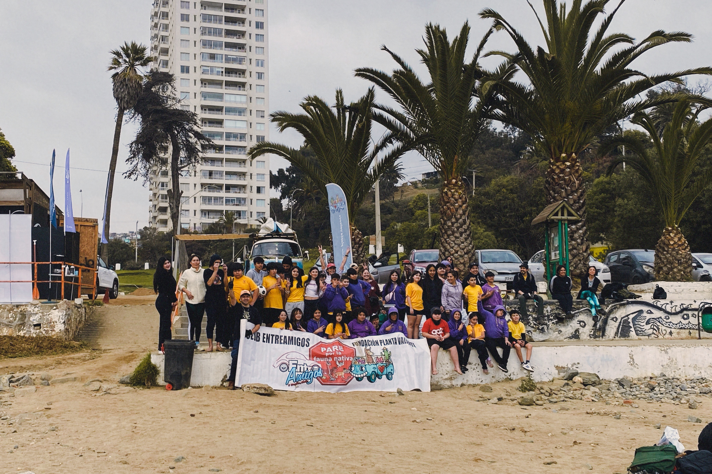
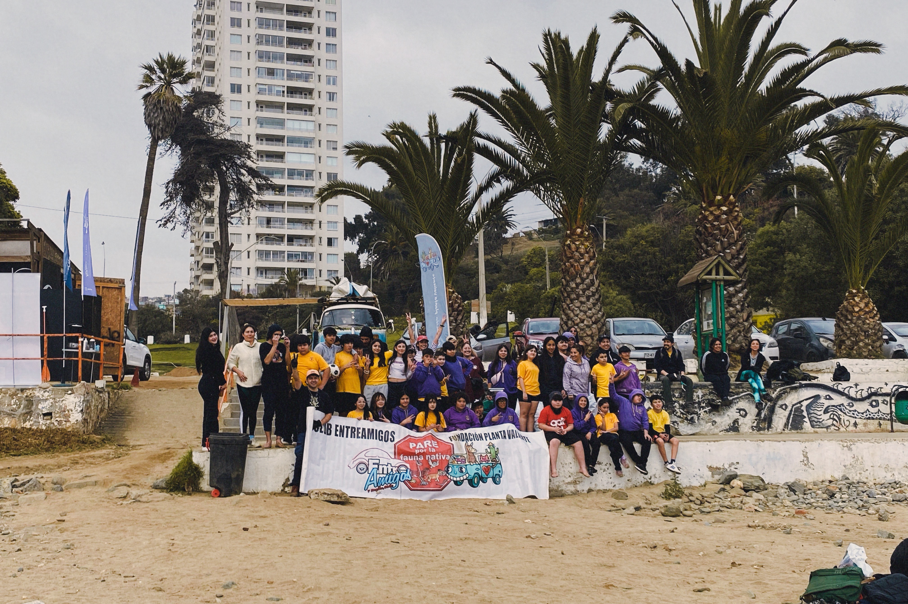

"LA ORGANIZACIÓN TERRITORIAL COMO MOTOR DE CAMBIO."
La Fundación Planta Valiente desarrolla y lidera actividades de educación ambiental orientadas al
cuidado y conservación de ecosistemas marinos y costeros. A lo largo de su trayectoria, ha impulsado
limpiezas de playas, ríos y humedales, sensibilizando sobre el impacto de los microplásticos y otros
residuos. Su trabajo combina acción directa con procesos educativos que promueven cambios culturales,
fomentando una organización territorial consciente y colaborativa para proteger el patrimonio natural y
fortalecer una ciudadanía ambiental.
Además, participa activamente en festivales outdoor, encuentros medioambientales y ferias comunitarias,
siempre con una propuesta didáctica y formativa que conecta a las personas con el entorno y las motiva a
ser parte del cambio hacia un futuro sostenible.

 
